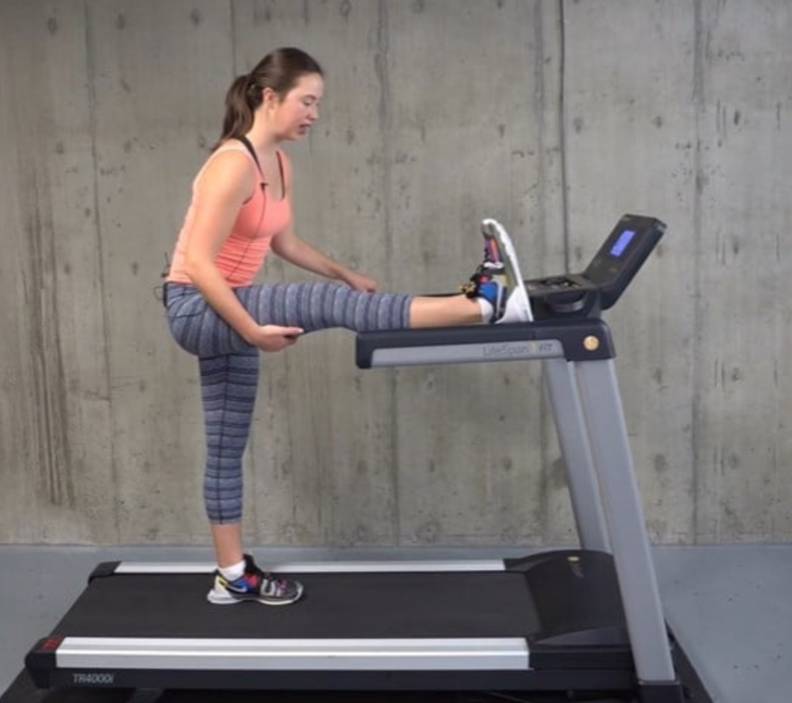

Bring one leg up by the sidebar handle with your toes pointing
towards you.
Tighten your core.
Hinge through your hips with your back flat.
Bend your upper body forward.
Lower your leg to return to the starting position.
Repeat the movement on the opposite leg.
